ビアボール ｜ サントリー
- 「補色」を使った例
完成例
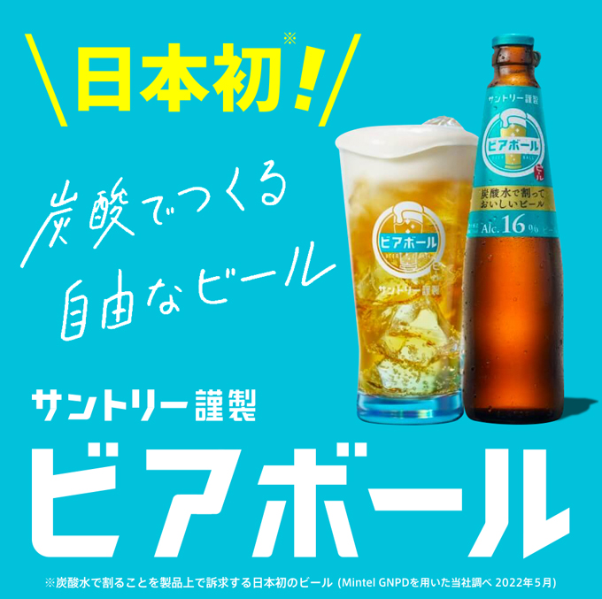
ペースト
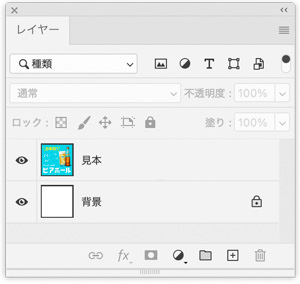
名前を付けて保存
- 「ビアボール.psd」として保存する
背景グラデーションを作成
- 描画色（左側の色を抽出）
- 背景色（右側の色を抽出）
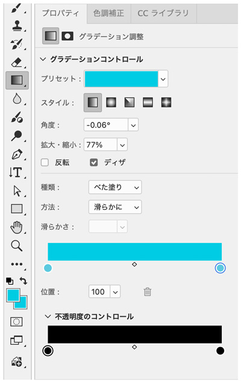
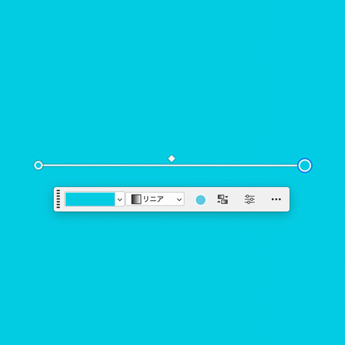
写真を切り抜き
- 見本レイヤーをコピー
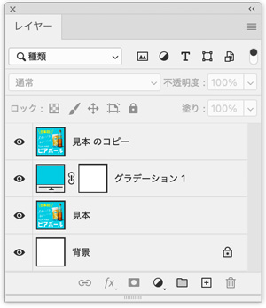
「オブジェクト選択ツール」でドラッグ
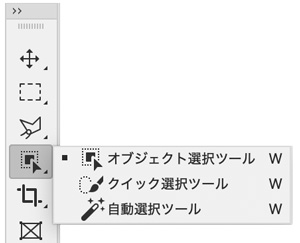
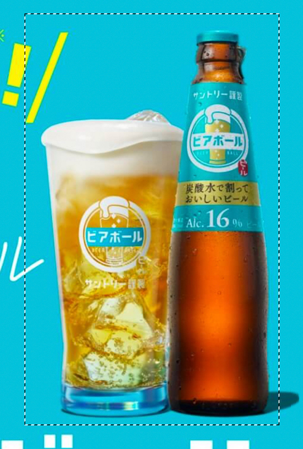
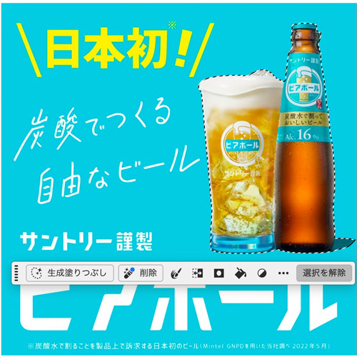
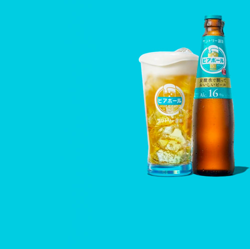
Illustratorでトレース
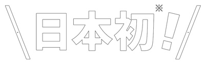
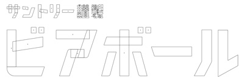
Illustratorのデータをスマートオブジェクトで配置
- Illustratorでコピー
- Photoshopでペースト（スマートオブジェクト）
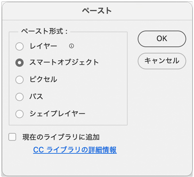
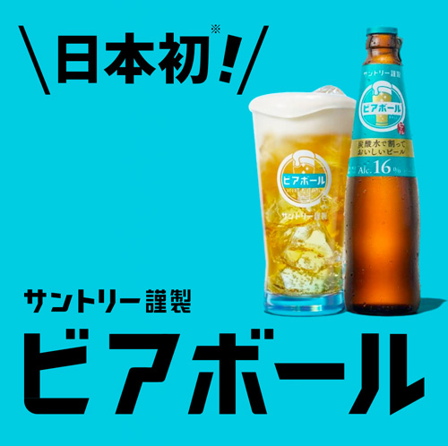
ベクトルマスクで着色
- 文字のスマートオブジェクトの上に新規レイヤー作成
- 色彩レイヤーとスマートオブジェクトレイヤーの「中間」を、Alt + クリックした「ベクトルマスク」にする
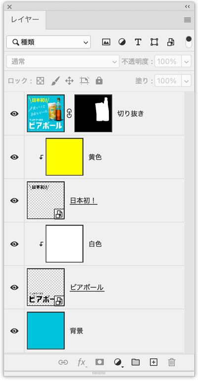
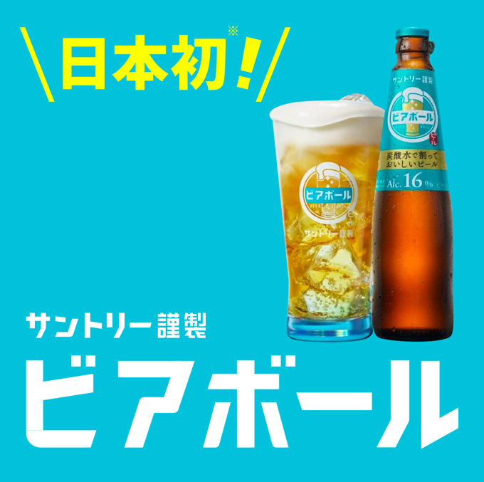
手書き文字の部分の処理
手書き文字の部分をコピー
- 新規ファイルにペースト
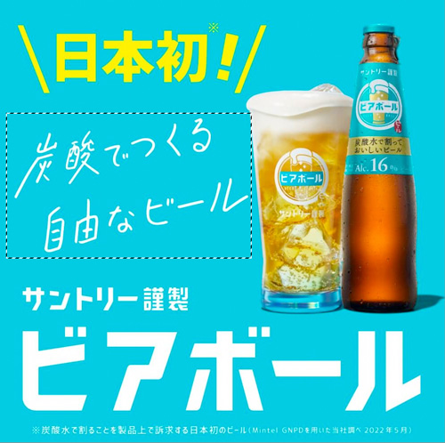
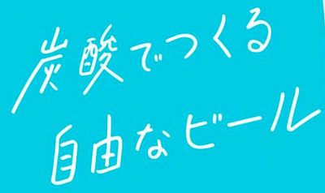
新規調整レイヤー「白黒」を選択
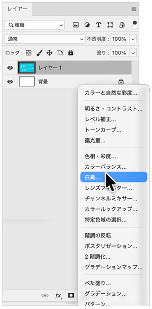
- 「自動補正」ボタンをクリック
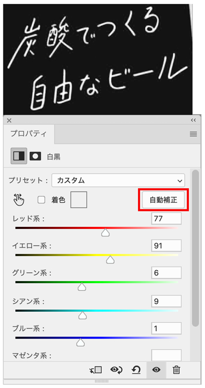
- 「画像を統合」
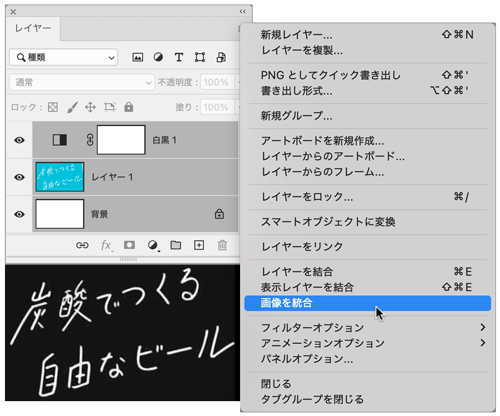
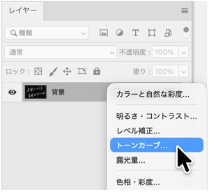
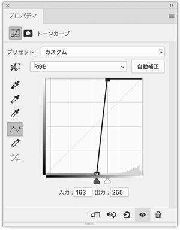
- 再度「画像を統合」する
- 余分な余白を黒で塗りつぶす
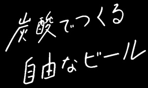
移動コピー
- 画像を「ビアボール.psd」の上に移動コピー
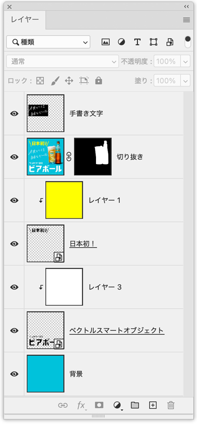
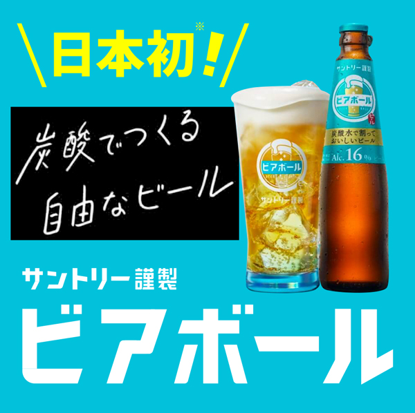
レイヤーオプション「スクリーン」を選択
- レイヤーの「黒色」のみを除外するオプション
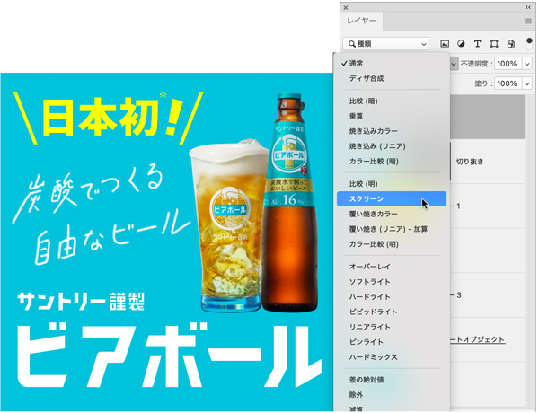
最下部の文字は、Photoshop上で入力
- 場合によっては、Illustratorでアウトライン化したものを利用
- 影は「投げ縄ツール」で適度な大きさで作成